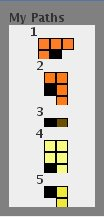

Design Patterns Game aims to teach Object Oriented Design Patterns through puzzle solving. For each design pattern, there exists a corresponding puzzle type. A puzzle related to a pattern can be solved by applying the related design pattern. A pattern specific compiler checks the application of the pattern to the puzzle.
The game consists of four basic components: a board, a solution-box, a tool-box and a compiler message view.
| Board | Solution-box | Tool-box |
|---|---|---|
|  | ||
| Compiler Message View | ||
Tool-box consists of tools to solve the puzzle. Each tool in the tool-box has a unique identification number.
Solution-box is the area where the player programs the solution. The solution-box initially has one solution-area
. Solution-area is used for specifying the actions
that will be applied to a tool in the toolbox. So each solution-area must be associated to a tool in the tool-box using the
tool's identification number. Add  button can be used to add additional
solution areas. Run button in the solution-box is used to run the created
solution.
button can be used to add additional
solution areas. Run button in the solution-box is used to run the created
solution.
Compiler message view is the area where the compilation errors are displayed. After the solution in the solution-box is run by pressing the Run button, the puzzle compiler checks the solution for errors. If the solution does not comply with the application of the pattern, the solution is not run and the compilation errors are viewed in the compiler message view. If the solution is correct in terms of pattern rules, the solution is executed.
Board is the area where the solution of the puzzle is displayed. It consists of board objects. Basic board objects are
catcher  and target
and target
 . There can be other
. There can be other  type of board objects depending on the puzzle. Catcher is a board object that can move on the board. Target is the object that catcher
tries to reach.
type of board objects depending on the puzzle. Catcher is a board object that can move on the board. Target is the object that catcher
tries to reach.
The goal of the game is to find a solution with the tools in the tool-box that will carry catcher to target on the board.
For each type of puzzle, the rules of the game change depending on the design pattern. The pattern puzzles are: